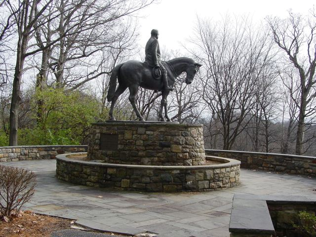

submissions
January 04, 2008
From: Amze Emmons
Harry Clay Trexler
Amze Emmons

This is a picture of a sculpture in honor of Harry Clay Trexler. He was a business mogul based out of Allentown, PA. He made his fortune off of a family lumber business and used the profits and political clout to leverage other enterprises. In the early 1900's he embraced the city beautification movement and pushed through city planning proposals that opened up lands for parks and recreation, turning Allentown into a model city by the 1920's. His trust still funds the city park system in which this statue is located.